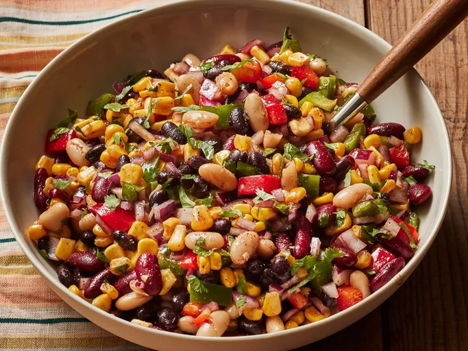

This Mexican bean salad with corn, bell pepper, and red onion is colorful, spicy and refreshing.

Prep Time:15 mins
Additional time:1 hr
Total Time:1 hr 15 mins
Serving: 8
Gather all the ingredients
Combine beans, bell pepper, com, and red onion in a large bowl
Whisk olive oil, vinegar,cilantro, lime juice, lemon juice, garlic, sugar, salt, cumin, black pepper together in a small bowl. Season with chili powdwer and hot sause.
Pour dressing over bean mixture and toss well. refrigerate until chilled, about1 hour. Serve cold.